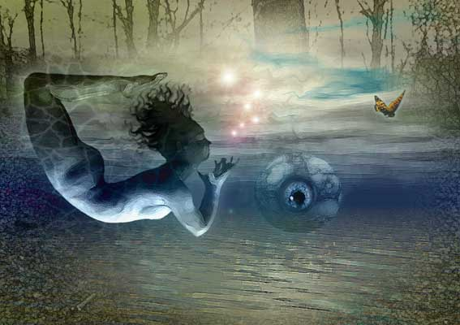

Richard Wazejewski
surrealistic art
Richard Wazejewski
surrealistic art
Richard Wazejewski writes: "I was born in 1959 of Polish/Austrian descent and over the years have gained a good grounding in drawing techniques and a wide appreciation of the arts. Whilst never officially trained as an artist, my fascination with visual imagery has propelled me into learning skills of my own. I now consider myself to be obsessed with the artwork I create. I mostly use programs such as Photoshop, Painter and Bryce to create my art. My work is mainly influenced by the surrealist movement and I suppose that is the category it would most comfortably fall under. I've always had an overwhelming desire to find a 'voice' and to harness my feelings, ideas and visions, motivated by the desire to liberate the workings of the subconscious mind, disrupting conscious thought processes by irrationality and enigma. The computer and more importantly Photoshop and a Wacom graphics tablet has enabIed me to realise this 'voice'".
 |